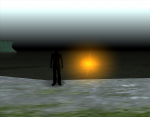

Weather
From Nexus RP: Wiki
Weather can be changed using setWeather and setWeatherBlended functions. In GTA: SA, every weather has different parameters for the sunrise, morning, midday, noon, afternoon, sunset, night and midnight, so a weather can vary a lot deppending of the time of the day.
Non-standard weather ID's between 20 and 255 are also supported, but they might be buggy at some moments of the day.
NRP: SA has custom weather functions which can modify how a weather is rendered, but in this list the weathers are described without taking that into account. Also, using setWeatherBlended allows for more undocumented effects.
If you want to see some screenshots of the first 45 weather IDs during different times of the day, visit this page for now.
Default GTA: SA weathers (registered in timecyc.dat)
| Wheather IDs | Description | Notes | Screenshots at 12:00 PM |
|---|---|---|---|
| 0-4 | In singleplayer, these are Los Santos specific weathers. They are clear weathers, with blue sky and few clouds.
Weather ID 0 applies a heat haze effect. |
timecyc.dat names:
|
|
| 5-9 | In singleplayer, these are San Fierro specific weathers. They are more diverse than Los Santos': some of them are clear, but others are rainy or foggy.
Weather ID 8 starts a thunderstorm, with rain and lighthings. Weather ID 9 starts a cloudy, dense fog. |
timecyc.dat names:
|
|
| 10-12 | In singleplayer, these are Las Venturas specific weathers. They are clear, dry weathers.
Weather ID 11 applies scorching hot weather, with a heat haze effect. |
timecyc.dat names:
|
|
| 13-16 | In singleplayer, these are Los Santos countryside specific weathers. They are dull, hazy, diverse weathers, with rainy ones.
Weather ID 16 starts a thunderstorm. |
timecyc.dat names:
|
|
| 17-19 | In singleplayer, these are Bone County specific weathers. They are clear, dry, scorching hot weathers.
Weather IDs 17 and 18 apply a heat haze effect. Weather ID 19 starts a dense sandstorm. |
timecyc.dat names:
|
|
| 20 | In singleplayer, this is probably the weather used internally when camera is underwater. It is greenish and cloudy, so it appears to be a kind of contaminated weather. | timecyc.dat name: UNDERWATER. | |
| 21, 22 | In singleplayer, these are weathers used in interiors. They are somewhat strange, dark weathers with gradiented skyline colors. Weather ID 21 adds a purple-ish color to the sky and objects. Weather ID 22 adds a black-white sky and a uniform light to objects. | timecyc.dat names:
|
 |
Other weather IDs
- 23 to 26: Pale orange weather.
- 27 to 29: Fresh blue weather.
- 30 to 32: Dark, cloudy, teal weather.
- 33: Dark, cloudy, brown weather.
- 34: Blue/purple, regular weather.
- 35: Dull brown weather.
- 36 to 38: Bright, foggy, orange weather.
- 39: Very bright weather. Night looks like day.
- 40 to 42: Blue/purple, cloudy weather.
- 43: Toxic, contaminated clouds weather.
- 44: Black/white sky weather, similar to 22.
- 45 to 60: Normal seeming weather with graphical bugs at evening.
- 100: Strange weather which makes objects disappear.
- 118: Stormy weather with pink sky and crystal water.
- 126 to 150: Horrible flashing red bugged weather.
- 151 to 175: Far draw distance weather with pink, purple and turquoise clouds.